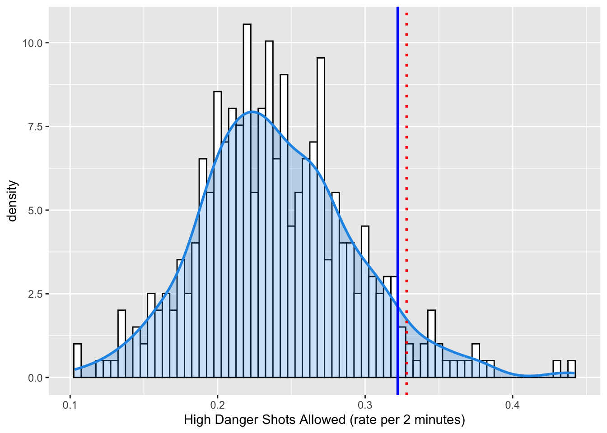
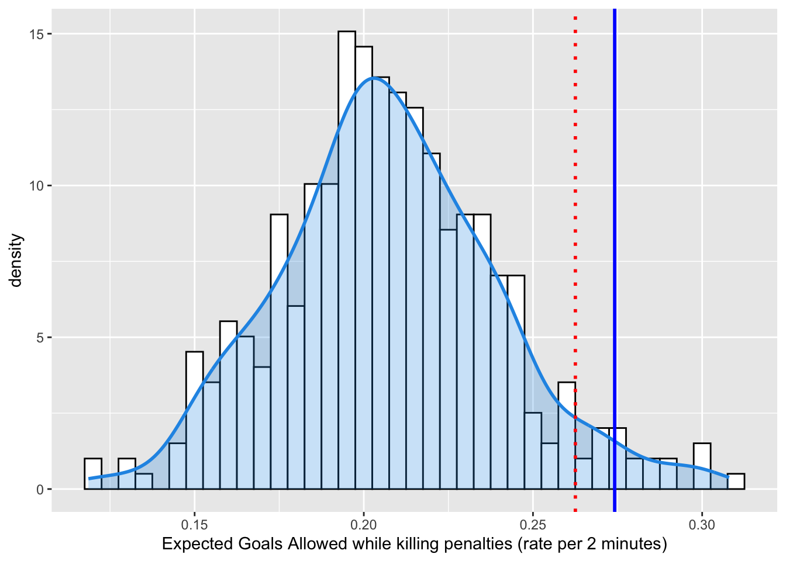
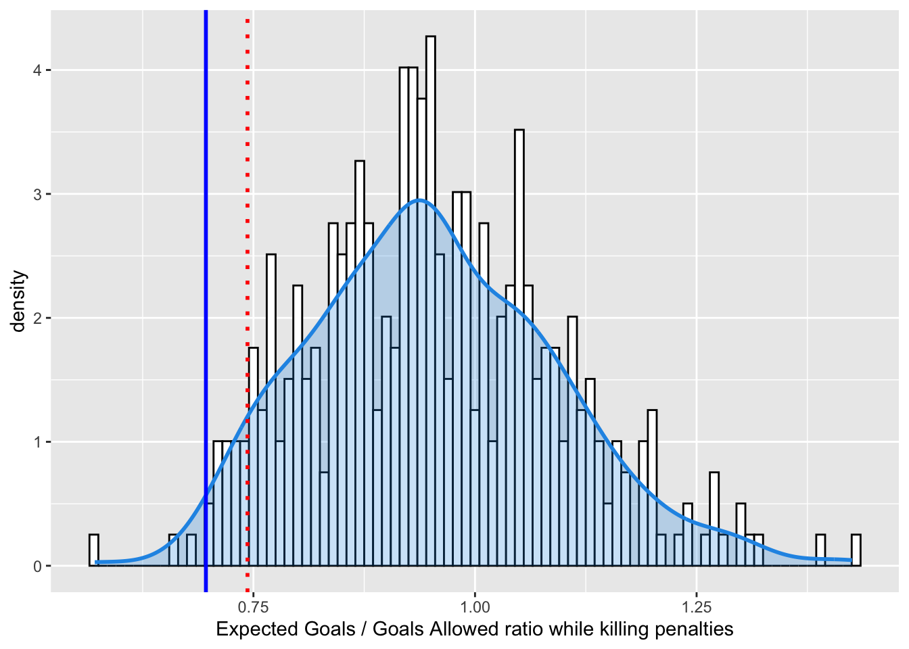
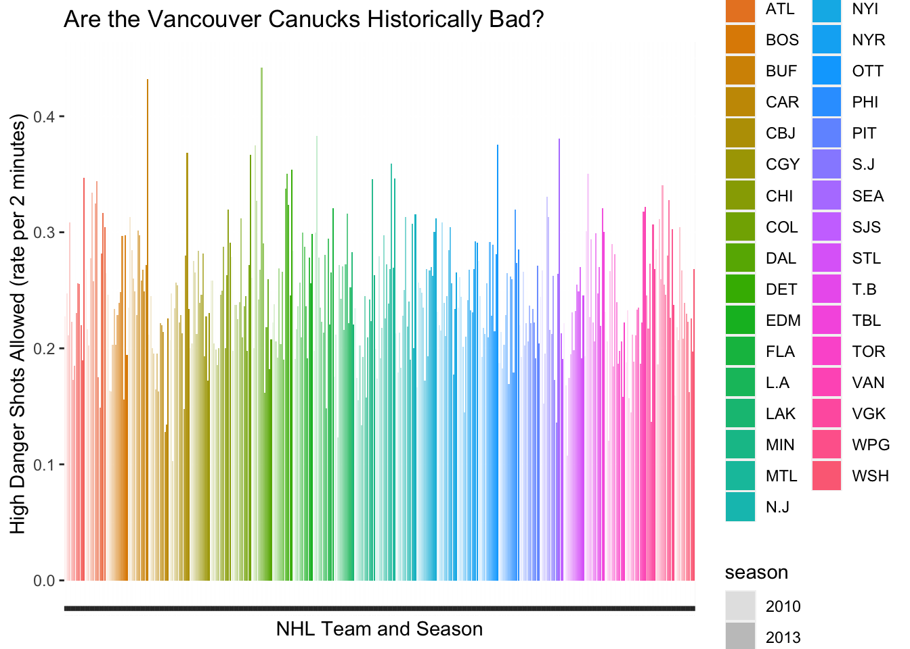
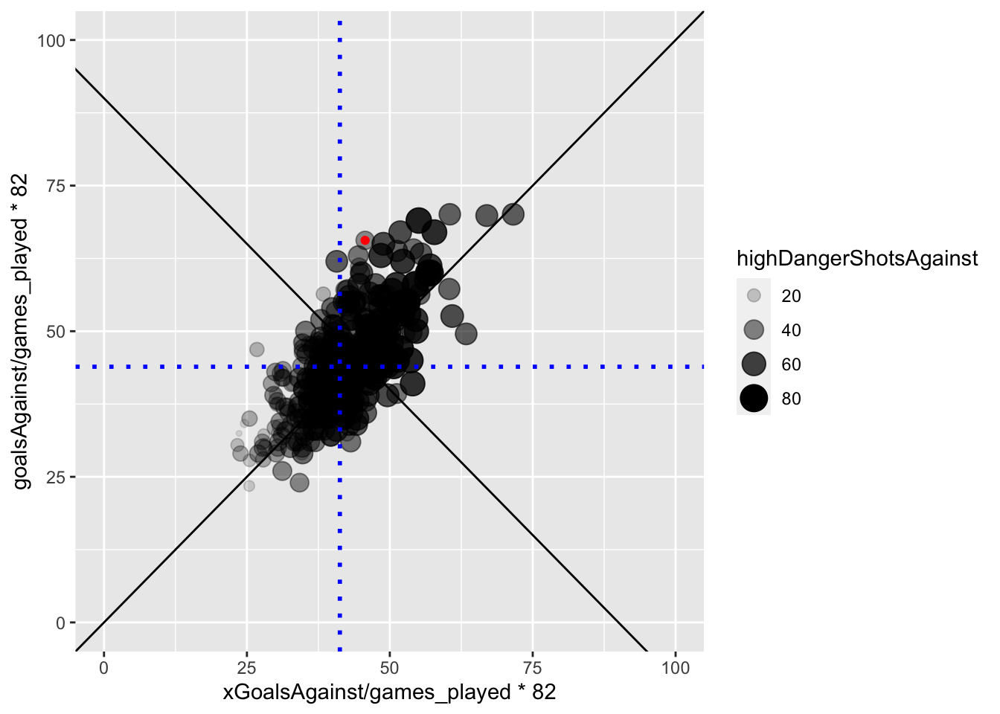

I’m interested in testing the hypothesis that this season’s Vancouver Canucks are a historically terrible team. One of the key factors in this hypothesis is that this year’s Canucks really, really suck at killing penalties. For this first assignment component, I’ll show you what I mean with a visualization!
The data I am using was downloaded from Moneypuck.com.
Now that I’ve massaged the data, I can tell you that the 2022-2023 Vancouver Canucks penalty kill percentage is 76.9633508. That means that when they get a penalty, there is about a 76.9633508 percent chance that they will prevent the opponent from scoring while they are short handed. However, unless you are a hockey super fan, you don’t have enough context to know if this is good or bad.
The figure below shows the distribution of penalty kill percentage for all teams and seasons since the 2010 season.
Code
d <-density(PK$PKpercent)# Step 3: Create an ECDFe <-ecdf(PK$PKpercent)# Step 4: Calculate the quantile valueq <-quantile(PK$PKpercent, 0.01)# Step 5: Calculate the empirical cumulative probability for the quantile valuep <-e(q)# Step 6: Estimate the density value for the quantile valuef <-approxfun(d$x, d$y)d_q <-f(q)# Step 7: Combine the results into a listpercentile <-list(q = q, p = p, d = d_q)VAN22 <- PK$PKpercent[PK$teamseason =="VAN 2022"]ggplot(PK, aes(x=PKpercent))+geom_histogram(aes(y = ..density..), binwidth =0.5, color ="black", fill="white")+geom_density(lwd =1, colour =4,fill =4, alpha =0.25)+geom_vline(xintercept = VAN22, color ="blue", size=1.0)+geom_vline(xintercept = q, color ="red", size =1, linetype="dotted")+xlab("Penalty Kill (%)")
Warning: Using `size` aesthetic for lines was deprecated in ggplot2 3.4.0.
ℹ Please use `linewidth` instead.
Warning: The dot-dot notation (`..density..`) was deprecated in ggplot2 3.4.0.
ℹ Please use `after_stat(density)` instead.
So… yeah. The blue line is the 22 Canucks. The red dotted line is the 1st! percentile of the density function. This is fine. We know this to be true. Their PK sucks. It is one of the worst in the history of the NHL. But WHY is it so bad? Bad goaltending? Bad defense? Both?
HIGH DANGER SHOTS ALLOWED
My theory is that their defense hangs their goaltenders out to dry. This might be measured with the number of High Danger Shots Allowed.
High Danger Shots are defined as unblocked shot attempts with greater than a 20% probability of being a goal, as calculated by hockey data nerds. High danger shots account for ~5% of shots and ~33% of goals in the NHL.
Below I calculate High Danger Shots Allowed Rate, which is the number of HDS during penalty kill situations standardized it to a rate per 2 minutes spent killing penalties (the normal duration of an NHL minor penalty).
Code
PKsituation<-subset(allseasons, situation =="4on5")# Step 2: Estimate the density of the datad <-density(PKsituation$HDSAR)# Step 3: Create an ECDFe <-ecdf(PKsituation$HDSAR)# Step 4: Calculate the quantile valueq <-quantile(PKsituation$HDSAR, 0.95)# Step 5: Calculate the empirical cumulative probability for the quantile valuep <-e(q)# Step 6: Estimate the density value for the quantile valuef <-approxfun(d$x, d$y)d_q <-f(q)# Step 7: Combine the results into a listpercentile <-list(q = q, p = p, d = d_q)VAN22HD <- PKsituation$HDSAR[PKsituation$teamseason =="VAN 2022"]ggplot(PKsituation, aes(x=HDSAR))+geom_histogram(aes(y = ..density..), binwidth =0.005, color ="black", fill="white")+geom_density(lwd =1, colour =4,fill =4, alpha =0.25)+geom_vline(xintercept = VAN22HD, color ="blue", size=1.0)+geom_vline(xintercept = q, color ="red", size =1, linetype="dotted")+xlab("High Danger Shots Allowed (rate per 2 minutes)")

Figure 1. Distribution of High Danger Shot Rate for NHL teams over the past 10 seasons. The 2022-2023 Vancouver Canucks are shown with the dark blue line (HDSAR = 0.3220996) and the 95th percentile is shown in red.
In terms of the semantics of Data Visualization, I am trying to DISCOVER the DISTRIBUTION of High Danger Shots Allowed, and then ANNOTATE the DISTRIBUTION with information about the current Vancouver Canucks team and their approximate percentile in the distribution.
To visualize this I am encoding a DERIVED attribute - the relative density of HDSAR as VERTICAL LENGTH of a bar (technically the MARK is a LINE) on an aligned axis. This is a pretty powerful encoding, which is why it is very common when visualizing distributions. In addtion, I am encoding HDSAR values themselves with HORIZONTAL POSITION. A nice, ordered channel for a nice, ordered attribute. The DENSITY FUNCTION is less clear to me. I’m obviously using a line, whose vertical and horizontal position encodes the relationship between the two variables. But the blue shaded fill? I kind of think that is using an AREA channel and REDUNDANT ENCODING to send a stronger signal.
The annotations of the 95th percentile and the 2022 Canucks’ HDSAR are encoded with COLOR and HORIZONTAL POSITION CHANNELS, and LINES as MARKS.
The 2022 Canucks indeed seem to be giving up HDS at a historically high rate.
GOALTENDING
But wait! You exclaim, shouting your objection into the uncaring Abyss. What about the goaltending? Surely that has also contributed to this season’s futility? “Perhaps..”, the Abyss murmurs back…
Let’s see whether the futility of the penalty kill is also a function of bad goaltending. Now, we can’t just look at raw goals allowed, because if the defense is allowing really High Danger Shots, then even a good goaltender is going to allow some goals. Fortunately, the NHL nerds have developed an Expected Goals metric. Moneypuck provides this handy description in their data dictionary:
Expected Goals:. The sum of the probabilities of unblocked shot attempts being goals. For example, a rebound shot in the slot may be worth 0.5 expected goals, while a shot from the blueline while short handed may be worth 0.01 expected goals. The expected value of each shot attempt is calculated by the MoneyPuck Expected Goals model. Expected goals is commonly abbreviated as xGoals. Blocked shot attempts are valued at 0 xGoals.
Cool!
Code
Tending<-allseasons[c("situation", "teamseason", "goalsAgainst", "xGoalsAgainst", "shotsOnGoalAgainst", "games_played", "iceTime", "highDangerShotsAgainst")]Tending$GArate<-Tending$xGoalsAgainst/Tending$iceTime*120 PKTending<-subset(Tending, situation =="4on5") d <-density(PKTending$GArate)# Step 3: Create an ECDFe <-ecdf(PKTending$GArate)# Step 4: Calculate the quantile valueq <-quantile(PKTending$GArate, 0.95)# Step 5: Calculate the empirical cumulative probability for the quantile valuep <-e(q)# Step 6: Estimate the density value for the quantile valuef <-approxfun(d$x, d$y)d_q <-f(q)# Step 7: Combine the results into a listpercentile <-list(q = q, p = p, d = d_q)VAN22GA <- PKTending$GArate[PKTending$teamseason =="VAN 2022"]ggplot(PKTending, aes(x=GArate))+geom_histogram(aes(y = ..density..), binwidth =0.005, color ="black", fill="white")+geom_density(lwd =1, colour =4,fill =4, alpha =0.25)+geom_vline(xintercept = VAN22GA, color ="blue", size=1.0)+geom_vline(xintercept = q, color ="red", size =1, linetype="dotted")+xlab("Expected Goals Allowed while killing penalties (rate per 2 minutes)")

This figure uses Expected Goals. It shows that Vancouver is playing a defense that is generating a historically high amount of expected goals, a result in line with our analysis of High Danger Chances.
To truly evaluate the goaltending, tt might be better for us to look at a ratio of Expected Goals to actual Goals. If this number is close to 1, it indicates an expected level of NHL goaltending during the penalty kill. The goalies are making the saves that they should. If the number is higher than 1, it means the goaltenders are making more saves than they should and are playing well. If the number is lower than 1, it means the goaltenders are letting in easy goals.
Code
Tending$XGrate<-Tending$xGoalsAgainst/Tending$goalsAgainst PKTending<-subset(Tending, situation =="4on5") d <-density(PKTending$XGrate)# Step 3: Create an ECDFe <-ecdf(PKTending$XGrate)# Step 4: Calculate the quantile valueq <-quantile(PKTending$XGrate, 0.05)# Step 5: Calculate the empirical cumulative probability for the quantile valuep <-e(q)# Step 6: Estimate the density value for the quantile valuef <-approxfun(d$x, d$y)d_q <-f(q)# Step 7: Combine the results into a listpercentile <-list(q = q, p = p, d = d_q)VAN22XG <- PKTending$XGrate[PKTending$teamseason =="VAN 2022"]ggplot(PKTending, aes(x=XGrate))+geom_histogram(aes(y = ..density..), binwidth =0.01, color ="black", fill="white")+geom_density(lwd =1, colour =4,fill =4, alpha =0.25)+geom_vline(xintercept = VAN22XG, color ="blue", size=1.0)+geom_vline(xintercept = q, color ="red", size =1, linetype="dotted")+xlab("Expected Goals / Goals Allowed ratio while killing penalties")

Figure 3. Distribution of Expected Goals to Goals Allowed during 4 on 5 situations for NHL teams over the past 10 seasons. The 2022-2023 Vancouver Canucks are shown with the dark blue line (XGrate = 0.6963636) and the 5th percentile is shown in red.
Uh Oh. Not only is the defense giving up a historically high number of High Danger scoring chances, the goaltenders are performing well below expectation. They are making about 70% of the saves they are supposed to make. So…. yeah. Why is the penalty kill so bad? Bad defense and bad goaltending. I mean, HISTORICALLY BAD.
Is it because of the system? I don’t think so. I think it is because of the players. They don’t have enough defensive talent on the team to effectively kill penalties. I am sad.
CHANGING CHANNELS
Now, lets mess this up! First I’m going back to the HDSAR figure, and changing some of my choices for marks and channels.
Code
ggplot(PKsituation, aes(x=teamseason, y=HDSAR)) +geom_bar(stat="identity", aes(fill=name, alpha=season)) +xlab("NHL Team and Season") +ylab("High Danger Shots Allowed (rate per 2 minutes)") +ggtitle("Are the Vancouver Canucks Historically Bad?") +theme(axis.text.x =element_text(angle =90, hjust =1, vjust =0.5, size =0.1),legend.position ="right")

Figure 2. Distribution of High Danger Shot Rate for NHL teams over the past 10 seasons.
Holy Crap. What an absolute nightmate. In terms of MARKS, I’ve stayed with LINES. But the CHANNELS… wow. The COLOR CHANNEL is used to indicate the team. The ALPHA CHANNEL (transparency) is used to indicate season (time). These choices create HUGE problems related to discriminability (alpha channel) and separability. In addition, my choice to order these lines according to team and season is not at all compatible with my choice of channels. Not to mention that the important thing - to see where the 2022 Canucks stand in terms of historical futility - is completely wrecked because the horizontal position (a strong channel) is not closely tied to the most salient Attribute (HDSAR). Go ahead and pick out the the 2022 Canucks from this figure…. I’ll wait.
Expressiveness and Effectiveness
From Munzner, 5.4.1:
The expressiveness principle: Visual encoding should express all of, and only, the information in the dataset attributes. Ordered data should be shown in a way that our perceptual system intrinsically senses as ordered. Well, using color sure violates that idea! Conversely, unordered data should not be shown in a way that perceptually implies an ordering that does not exist.
The effectiveness principle: The importance of the attribute should match the salience of the channel (its noticeablity). The most important attributes should be encoded with the most effective channels. Definitely not! Even though the Line Marks are using Length on an aligned axis, their width and ordering on the x axis completely obscures the focal team.
Discriminability
Using whatever data set you choose (it need not be the same data used for Figures 1 and 2), create a visualization called Figure 3 that uses a magnitude channel with a number of bins that facilitate discriminiability of an attribute. Write a caption that explains your choices of marks and channels in these terms. Then, using the exact same data, create a visualization called Figure 4 that uses this same channel for WAY TOO MANY BINS, violating the guidelines for discriminability. Write a caption that explains why this number of bins is bad compared to Figure 3. Look at the NHL Rainbow! So many colors… so little ability to differentiate between teams. For example, go ahead and try to pick out Edmonton vs Florida
Separability
Using whatever data set you choose (it need not be the same data used for Figures 1-4), create a visualization called Figure 5 that uses a two or more channels to encode two or more attributes while maintaining separability. Write a caption that explains your choices of marks and channels in these terms. Then, using the exact same data, create a visualization called Figure 6 that uses channels that are integral, or at least much less separable. Write a caption that explains why choosing these channels is bad compared to Figure 5.
For this one I’d like to try something else. Let’s look at the Expected Goals and Allowed Goals as a scatterplot:
Code
V22<-subset(PKTending, teamseason =="VAN 2022")VAN22XG <- PKTending$XGrate[PKTending$teamseason =="VAN 2022"]ggplot(PKTending, aes(x=xGoalsAgainst/games_played*82, y =goalsAgainst/games_played*82 ))+geom_point(aes(alpha=highDangerShotsAgainst, size=highDangerShotsAgainst))+geom_abline(intercept =0, slope =1)+geom_abline(intercept =90, slope =-1)+xlim(0,100)+ylim(0,100)+geom_vline(xintercept =mean(PKTending$xGoalsAgainst/PKTending$games_played*82), color ="blue", size=1.0, linetype="dotted")+geom_hline(yintercept =mean(PKTending$goalsAgainst/PKTending$games_played*82), color ="blue", size =1, linetype="dotted")+geom_point(data = V22, aes(x=xGoalsAgainst/games_played*82, y =goalsAgainst/games_played*82),color ="red")

Popout
Using whatever data set you choose (it need not be the same data used for Figures 1-6… you get the idea), create a visualization called Figure 7 that effectively uses the concept of popout. Write a caption that explains your choices of marks and channels in these terms. Then, using the exact same data, create a visualization called Figure 8 that makes the identification task in Figure 7 much more difficult. Write a caption that explains why Figure 8 sucks compared to Figure 7. The popout concept is best shown by my use of a dark blue (color) line mark to indicate the 22 Canucks. Without that, you cannot achieve the task because the 22 Canucks are too hard to find without doing a serial search.
Source Code
---title: "TUTORIAL 5 - Marks and Channels"author: "Barrie Robison"date: "2023-02-13"categories: [Assignment, DataViz]image: "Cthulhuhockey.png"code-fold: truecode-tools: truedescription: "Trying out terrible combinations of marks and channels... for learning!"---# **THE HISTORIC FUTILITY OF THE 22-23 VANCOUVER CANUCKS**This tutorial is my attempt at [Assignment 4](../A4-MarksChannels/index.qmd)!## PENALTY KILLI'm interested in testing the hypothesis that this season's [Vancouver Canucks](https://www.nhl.com/canucks) are a historically terrible team. One of the key factors in this hypothesis is that this year's Canucks really, really suck at killing penalties. For this first assignment component, I'll show you what I mean with a visualization!The data I am using was downloaded from [Moneypuck.com](https://moneypuck.com/data.htm). ```{r}#| output: falselibrary(tidyverse)library(dplyr)library(ggplot2)library(vroom)files <- fs::dir_ls(glob ="*teams.csv")allseasons <- vroom::vroom(files)allseasons$color<-"darkblue"allseasons$color[allseasons$name=="VAN"& allseasons$season=="2022"] <-"red" allseasons$teamseason<-paste(allseasons$name, allseasons$season) allseasons$HDSAR<-allseasons$highDangerShotsAgainst/allseasons$iceTime*120 PKDATA<-allseasons[c("situation", "teamseason", "goalsAgainst", "penaltiesFor")] PKpenalties<-subset(PKDATA, situation =="all") PKgoals<-subset(PKDATA, situation =="4on5") PK<-PKgoals[c("teamseason", "goalsAgainst")] PK$penaltiesFor<-PKpenalties$penaltiesFor PK$PKpercent<-100-(PK$goalsAgainst/PK$penaltiesFor*100)```Now that I've massaged the data, I can tell you that the 2022-2023 Vancouver Canucks penalty kill percentage is `r PK$PKpercent[PK$teamseason=="VAN 2022"]`. That means that when they get a penalty, there is about a `r PK$PKpercent[PK$teamseason=="VAN 2022"]` percent chance that they will prevent the opponent from scoring while they are short handed. However, unless you are a hockey super fan, you don't have enough context to know if this is good or bad.The figure below shows the distribution of penalty kill percentage for all teams and seasons since the 2010 season.```{r} d <-density(PK$PKpercent)# Step 3: Create an ECDFe <-ecdf(PK$PKpercent)# Step 4: Calculate the quantile valueq <-quantile(PK$PKpercent, 0.01)# Step 5: Calculate the empirical cumulative probability for the quantile valuep <-e(q)# Step 6: Estimate the density value for the quantile valuef <-approxfun(d$x, d$y)d_q <-f(q)# Step 7: Combine the results into a listpercentile <-list(q = q, p = p, d = d_q)VAN22 <- PK$PKpercent[PK$teamseason =="VAN 2022"]ggplot(PK, aes(x=PKpercent))+geom_histogram(aes(y = ..density..), binwidth =0.5, color ="black", fill="white")+geom_density(lwd =1, colour =4,fill =4, alpha =0.25)+geom_vline(xintercept = VAN22, color ="blue", size=1.0)+geom_vline(xintercept = q, color ="red", size =1, linetype="dotted")+xlab("Penalty Kill (%)")```So... yeah. The blue line is the 22 Canucks. The red dotted line is the **1st!** percentile of the density function. This is fine. We know this to be true. Their PK sucks. It is one of the worst in the history of the NHL. But WHY is it so bad? Bad goaltending? Bad defense? Both?## HIGH DANGER SHOTS ALLOWEDMy theory is that their defense hangs their goaltenders out to dry. This might be measured with the number of High Danger Shots Allowed. **High Danger Shots** are defined as unblocked shot attempts with greater than a 20% probability of being a goal, as calculated by hockey data nerds. High danger shots account for ~5% of shots and ~33% of goals in the NHL.Below I calculate **High Danger Shots Allowed Rate**, which is the number of HDS during penalty kill situations standardized it to a rate per 2 minutes spent killing penalties (the normal duration of an NHL minor penalty).```{r}PKsituation<-subset(allseasons, situation =="4on5")# Step 2: Estimate the density of the datad <-density(PKsituation$HDSAR)# Step 3: Create an ECDFe <-ecdf(PKsituation$HDSAR)# Step 4: Calculate the quantile valueq <-quantile(PKsituation$HDSAR, 0.95)# Step 5: Calculate the empirical cumulative probability for the quantile valuep <-e(q)# Step 6: Estimate the density value for the quantile valuef <-approxfun(d$x, d$y)d_q <-f(q)# Step 7: Combine the results into a listpercentile <-list(q = q, p = p, d = d_q)VAN22HD <- PKsituation$HDSAR[PKsituation$teamseason =="VAN 2022"]ggplot(PKsituation, aes(x=HDSAR))+geom_histogram(aes(y = ..density..), binwidth =0.005, color ="black", fill="white")+geom_density(lwd =1, colour =4,fill =4, alpha =0.25)+geom_vline(xintercept = VAN22HD, color ="blue", size=1.0)+geom_vline(xintercept = q, color ="red", size =1, linetype="dotted")+xlab("High Danger Shots Allowed (rate per 2 minutes)")```**Figure 1.** Distribution of High Danger Shot Rate for NHL teams over the past 10 seasons. The 2022-2023 Vancouver Canucks are shown with the dark blue line (HDSAR = `r VAN22HD`) and the 95th percentile is shown in [red]{.red}. In terms of the semantics of Data Visualization, I am trying to DISCOVER the DISTRIBUTION of `High Danger Shots Allowed`, and then ANNOTATE the DISTRIBUTION with information about the current Vancouver Canucks team and their approximate percentile in the distribution.To visualize this I am encoding a DERIVED attribute - the relative density of HDSAR as VERTICAL LENGTH of a bar (technically the MARK is a LINE) on an aligned axis. This is a pretty powerful encoding, which is why it is very common when visualizing distributions. In addtion, I am encoding HDSAR values themselves with HORIZONTAL POSITION. A nice, ordered channel for a nice, ordered attribute. The DENSITY FUNCTION is less clear to me. I'm obviously using a line, whose vertical and horizontal position encodes the relationship between the two variables. But the blue shaded fill? I kind of think that is using an AREA channel and REDUNDANT ENCODING to send a stronger signal. The annotations of the 95th percentile and the 2022 Canucks' HDSAR are encoded with COLOR and HORIZONTAL POSITION CHANNELS, and LINES as MARKS.The 2022 Canucks indeed seem to be giving up HDS at a historically high rate.## GOALTENDINGBut wait! You exclaim, shouting your objection into the uncaring Abyss. What about the goaltending? Surely that has also contributed to this season's futility? "Perhaps..", the Abyss murmurs back...Let's see whether the futility of the penalty kill is also a function of bad goaltending. Now, we can't just look at raw goals allowed, because if the defense is allowing really High Danger Shots, then even a good goaltender is going to allow some goals. Fortunately, the NHL nerds have developed an **Expected Goals** metric. Moneypuck provides this handy description in their data dictionary:**Expected Goals:**. The sum of the probabilities of unblocked shot attempts being goals. For example, a rebound shot in the slot may be worth 0.5 expected goals, while a shot from the blueline while short handed may be worth 0.01 expected goals. The expected value of each shot attempt is calculated by the [MoneyPuck Expected Goals model](http://moneypuck.com/about.htm#shotModel). Expected goals is commonly abbreviated as `xGoals`. Blocked shot attempts are valued at 0 `xGoals`. Cool!```{r} Tending<-allseasons[c("situation", "teamseason", "goalsAgainst", "xGoalsAgainst", "shotsOnGoalAgainst", "games_played", "iceTime", "highDangerShotsAgainst")]Tending$GArate<-Tending$xGoalsAgainst/Tending$iceTime*120 PKTending<-subset(Tending, situation =="4on5") d <-density(PKTending$GArate)# Step 3: Create an ECDFe <-ecdf(PKTending$GArate)# Step 4: Calculate the quantile valueq <-quantile(PKTending$GArate, 0.95)# Step 5: Calculate the empirical cumulative probability for the quantile valuep <-e(q)# Step 6: Estimate the density value for the quantile valuef <-approxfun(d$x, d$y)d_q <-f(q)# Step 7: Combine the results into a listpercentile <-list(q = q, p = p, d = d_q)VAN22GA <- PKTending$GArate[PKTending$teamseason =="VAN 2022"]ggplot(PKTending, aes(x=GArate))+geom_histogram(aes(y = ..density..), binwidth =0.005, color ="black", fill="white")+geom_density(lwd =1, colour =4,fill =4, alpha =0.25)+geom_vline(xintercept = VAN22GA, color ="blue", size=1.0)+geom_vline(xintercept = q, color ="red", size =1, linetype="dotted")+xlab("Expected Goals Allowed while killing penalties (rate per 2 minutes)") ```This figure uses Expected Goals. It shows that Vancouver is playing a defense that is generating a historically high amount of expected goals, a result in line with our analysis of High Danger Chances.To truly evaluate the goaltending, tt might be better for us to look at a ratio of Expected Goals to actual Goals. If this number is close to 1, it indicates an expected level of NHL goaltending during the penalty kill. The goalies are making the saves that they should. If the number is higher than 1, it means the goaltenders are making more saves than they should and are playing well. If the number is lower than 1, it means the goaltenders are letting in easy goals. ```{r}Tending$XGrate<-Tending$xGoalsAgainst/Tending$goalsAgainst PKTending<-subset(Tending, situation =="4on5") d <-density(PKTending$XGrate)# Step 3: Create an ECDFe <-ecdf(PKTending$XGrate)# Step 4: Calculate the quantile valueq <-quantile(PKTending$XGrate, 0.05)# Step 5: Calculate the empirical cumulative probability for the quantile valuep <-e(q)# Step 6: Estimate the density value for the quantile valuef <-approxfun(d$x, d$y)d_q <-f(q)# Step 7: Combine the results into a listpercentile <-list(q = q, p = p, d = d_q)VAN22XG <- PKTending$XGrate[PKTending$teamseason =="VAN 2022"]ggplot(PKTending, aes(x=XGrate))+geom_histogram(aes(y = ..density..), binwidth =0.01, color ="black", fill="white")+geom_density(lwd =1, colour =4,fill =4, alpha =0.25)+geom_vline(xintercept = VAN22XG, color ="blue", size=1.0)+geom_vline(xintercept = q, color ="red", size =1, linetype="dotted")+xlab("Expected Goals / Goals Allowed ratio while killing penalties") ```**Figure 3.** Distribution of Expected Goals to Goals Allowed during 4 on 5 situations for NHL teams over the past 10 seasons. The 2022-2023 Vancouver Canucks are shown with the dark blue line (XGrate = `r VAN22XG`) and the 5th percentile is shown in [red]{.red}. Uh Oh. Not only is the defense giving up a historically high number of High Danger scoring chances, the goaltenders are performing well below expectation. They are making about 70% of the saves they are supposed to make. So.... yeah. Why is the penalty kill so bad? Bad defense and bad goaltending. I mean, HISTORICALLY BAD.Is it because of the system? I don't think so. I think it is because of the players. They don't have enough defensive talent on the team to effectively kill penalties. I am sad.## CHANGING CHANNELSNow, lets mess this up! First I'm going back to the HDSAR figure, and changing some of my choices for marks and channels.```{r}ggplot(PKsituation, aes(x=teamseason, y=HDSAR)) +geom_bar(stat="identity", aes(fill=name, alpha=season)) +xlab("NHL Team and Season") +ylab("High Danger Shots Allowed (rate per 2 minutes)") +ggtitle("Are the Vancouver Canucks Historically Bad?") +theme(axis.text.x =element_text(angle =90, hjust =1, vjust =0.5, size =0.1),legend.position ="right")```**Figure 2.** Distribution of High Danger Shot Rate for NHL teams over the past 10 seasons. Holy Crap. What an absolute nightmate. In terms of MARKS, I've stayed with LINES. But the CHANNELS... wow. The COLOR CHANNEL is used to indicate the team. The ALPHA CHANNEL (transparency) is used to indicate season (time). These choices create HUGE problems related to discriminability (alpha channel) and separability. In addition, my choice to order these lines according to team and season is not at all compatible with my choice of channels. Not to mention that the important thing - to see where the 2022 Canucks stand in terms of historical futility - is completely wrecked because the horizontal position (a strong channel) is not closely tied to the most salient Attribute (HDSAR). Go ahead and pick out the the 2022 Canucks from this figure.... I'll wait.### Expressiveness and Effectiveness*From Munzner, 5.4.1:*[The expressiveness principle:]{.red} Visual encoding should express all of, and only, the information in the dataset attributes. Ordered data should be shown in a way that our perceptual system intrinsically senses as ordered. [Well, using color sure violates that idea!]{.red} Conversely, unordered data should not be shown in a way that perceptually implies an ordering that does not exist.[The effectiveness principle:]{.red} The importance of the attribute should match the salience of the channel (its noticeablity). The most important attributes should be encoded with the most effective channels. [Definitely not! Even though the Line Marks are using Length on an aligned axis, their width and ordering on the x axis completely obscures the focal team.]{.red}### DiscriminabilityUsing whatever data set you choose (it need not be the same data used for Figures 1 and 2), create a visualization called Figure 3 that uses a magnitude channel with a number of bins that facilitate discriminiability of an attribute. Write a caption that explains your choices of marks and channels in these terms. Then, using the exact same data, create a visualization called Figure 4 that uses this same channel for WAY TOO MANY BINS, violating the guidelines for discriminability. Write a caption that explains why this number of bins is bad compared to Figure 3. [Look at the NHL Rainbow! So many colors... so little ability to differentiate between teams. For example, go ahead and try to pick out Edmonton vs Florida]{.red}### SeparabilityUsing whatever data set you choose (it need not be the same data used for Figures 1-4), create a visualization called Figure 5 that uses a two or more channels to encode two or more attributes while maintaining separability. Write a caption that explains your choices of marks and channels in these terms. Then, using the exact same data, create a visualization called Figure 6 that uses channels that are integral, or at least much less separable. Write a caption that explains why choosing these channels is bad compared to Figure 5.For this one I'd like to try something else. Let's look at the Expected Goals and Allowed Goals as a scatterplot:```{r}V22<-subset(PKTending, teamseason =="VAN 2022")VAN22XG <- PKTending$XGrate[PKTending$teamseason =="VAN 2022"]ggplot(PKTending, aes(x=xGoalsAgainst/games_played*82, y =goalsAgainst/games_played*82 ))+geom_point(aes(alpha=highDangerShotsAgainst, size=highDangerShotsAgainst))+geom_abline(intercept =0, slope =1)+geom_abline(intercept =90, slope =-1)+xlim(0,100)+ylim(0,100)+geom_vline(xintercept =mean(PKTending$xGoalsAgainst/PKTending$games_played*82), color ="blue", size=1.0, linetype="dotted")+geom_hline(yintercept =mean(PKTending$goalsAgainst/PKTending$games_played*82), color ="blue", size =1, linetype="dotted")+geom_point(data = V22, aes(x=xGoalsAgainst/games_played*82, y =goalsAgainst/games_played*82),color ="red")```### PopoutUsing whatever data set you choose (it need not be the same data used for Figures 1-6... you get the idea), create a visualization called Figure 7 that effectively uses the concept of popout. Write a caption that explains your choices of marks and channels in these terms. Then, using the exact same data, create a visualization called Figure 8 that makes the identification task in Figure 7 much more difficult. Write a caption that explains why Figure 8 sucks compared to Figure 7. [The popout concept is best shown by my use of a dark blue (color) line mark to indicate the 22 Canucks. Without that, you cannot achieve the task because the 22 Canucks are too hard to find without doing a serial search.]{.red}